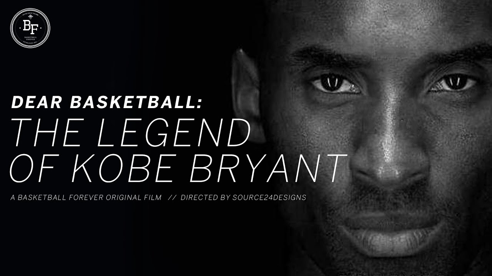

"Dear Basketball"

2008-2016Bryant was already a three-time champion, but he had never won one without Shaq. O’Neal had gone on to win another title in Miami.
And the supporting cast Bryant had played with since O’Neal’s departure was never nearly as talented. But when the Lakers traded for Pau Gasol in
February 2008, Bryant’s fortunes changed for the better. The Lakers went on to finish 57-25 and advanced all the way to the NBA Finals.
In the end, the Boston Celtics won the series, 3-2. But it was the last time anyone would best Bryant in the finals. The next year,
the Lakers knocked off the Orlando Magic for their 15th title, Bryant’s fourth. And in 2010, the Lakers outlasted the Celtics to win Game 7, 83-79. It was Bryant’s fifth and final championship ring.
Bryant donned the red, white and blue for the final time in 2012. He won his final gold medal at the 2012 Summer Olympics in London. At 33, he was an aging star.
But he still saw minutes in all eight games and helped the Americans run the table again. This time, he averaged 12.1 points per contest.
Bryant spent the rest of his career chasing a sixth NBA title, which would have tied him with Michael Jordan.
But injuries plagued him his final few seasons. On Nov. 29, 2015, Bryant published a poem in The Players Tribune,
titled “Dear Basketball.” In it, he announced that he would be retiring at the end of the season. On April 13, 2016, Bryant played in his final NBA game.
But it wasn’t a declining star’s melancholy limp across the finish line. Bryant came to play. He scored a season-high 60 points in the Lakers’ 101-96 win over the Utah Jazz.